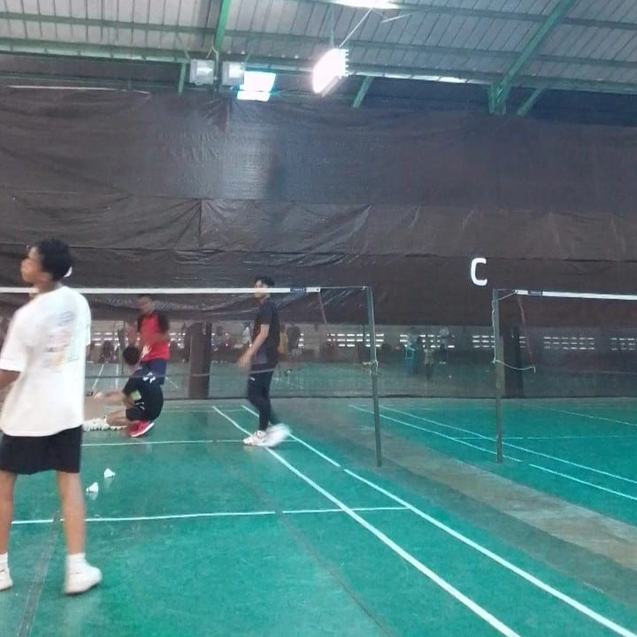

Cileungsi, 24 Mei 2024 -Ekstrakurikuler badminton di BM3 kembali menggelar kegiatan mingguan yang selalu dinantikan oleh para siswa. Kegiatan yang berlangsung pada setiap Hari Sabtu ini menjadi ajang untuk melatih keterampilan bermain badminton, menjalin kebersamaan, dan menumbuhkan semangat sportivitas di kalangan siswa. Setiap minggunya, kegiatan ekstrakurikuler badminton di BM3 diawali dengan sesi pemanasan dan latihan fisik. Dipandu oleh pelatih berpengalaman, yaitu Bapa Ade , para siswa diajak untuk melakukan berbagai latihan dasar seperti footwork, teknik pukulan, dan strategi permainan. "Kami berfokus pada pembinaan teknik dasar yang kuat agar siswa dapat bermain dengan baik dan menghindari cedera," ujar pembina ekstrakurikuler badminton di BM3. Antusiasme siswa terhadap ekstrakurikuler badminton sangat tinggi. Lebih dari 30 siswa dari berbagai tingkat kelas turut berpartisipasi dalam kegiatan ini. "Saya sangat senang bisa ikut ekstrakurikuler badminton. Selain bisa belajar teknik baru, saya juga bisa bertemu teman-teman dari kelas lain," ujar salah satu siswa yang mengikuti ekskul. Selain latihan rutin, kegiatan mingguan ini juga diisi dengan pertandingan internal yang diadakan untuk mengukur kemampuan dan memberikan pengalaman bertanding kepada para siswa. Pertandingan ini dibagi dalam kategori tunggal dan ganda, baik putra maupun putri. Melalui latihan yang terstruktur dan kompetisi internal, kemampuan bermain badminton para siswa semakin meningkat. Beberapa siswa bahkan telah menunjukkan prestasi yang membanggakan dalam berbagai turnamen lokal. "Kami bangga melihat perkembangan kemampuan siswa. Beberapa dari mereka sudah berhasil meraih juara di tingkat daerah," ujar pembina ekstrakurikuler badminton di BM3. Pihak sekolah memberikan dukungan penuh terhadap kegiatan ekstrakurikuler ini. Kepala Sekolah BM3, menyatakan bahwa ekstrakurikuler olahraga seperti badminton tidak hanya penting untuk kesehatan fisik tetapi juga untuk membentuk karakter siswa. "Kami selalu mendukung kegiatan yang positif seperti ini. Badminton mengajarkan disiplin, kerja keras, dan sportivitas kepada para siswa," ujarnya. Melihat antusiasme dan hasil positif dari kegiatan ini, ekstrakurikuler badminton di BM3 berencana untuk meningkatkan frekuensi latihan dan mengadakan lebih banyak turnamen internal. Selain itu, mereka juga berencana untuk mengundang pelatih tamu dan mengadakan workshop untuk memperkaya pengetahuan dan keterampilan siswa. "Kami ingin memberikan yang terbaik bagi siswa. Rencana ke depan adalah memperbanyak pelatihan dan kompetisi untuk meningkatkan kemampuan mereka," ujar pembina ekstrakurikuler badminton di BM3. Kegiatan mingguan ekstrakurikuler badminton di BM3 adalah bukti nyata bahwa olahraga bisa menjadi sarana yang efektif untuk mengembangkan keterampilan, membangun kebersamaan, dan menumbuhkan semangat sportivitas. Dengan dukungan dari sekolah dan antusiasme para siswa, ekstrakurikuler ini diharapkan dapat terus berkembang dan menghasilkan lebih banyak prestasi di masa depan.
